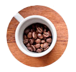

O café que chega até você!

Escolha o seu café

Hoje em dia, café bom não é só aquele feito no coador de pano que nossas avós faziam - um novo mundo se abre para nós em matéria de tipos de grãos, procedência, tipos de torras e jeitos de preparar a bebida, que é tão popular na mesa dos brasileiros.
Onde encontrar a loja
O Kombi Coffee é móvel.
Veja onde você pode encontrar o seu carro.